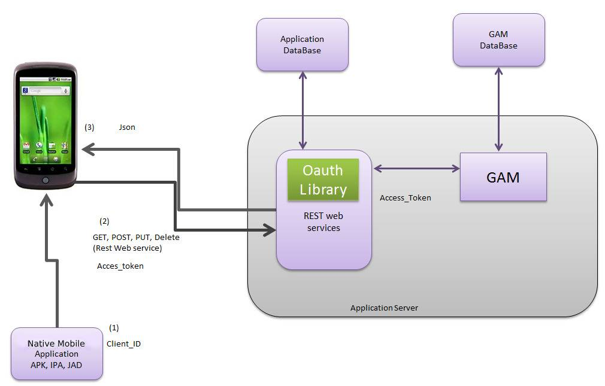

The architecture of a Native Mobile application consists basically of a "client application" which is installed on the device (depending on the device it will be an apk, ipa, or jad), and a server application (REST Web Services which solve the business logic of the application).
The client application (apk, ipa, jad) may be available in any application market place (depending on the platform).
The server application may be installed in any host server.
Depending on the characteristics of the application, in most cases, a very important issue is to be sure that the server application is only accessible by authorized users. Besides, another prerequisite may be that REST Web Services be only accessible from the devices, not from other clients. If they are accessible from other clients, only authorized clients should access them.
This is achieved in GeneXus Native Mobile applications using GAM. The security mechanism is based on OAuth in this case.
See the basic architecture structure of these applications and the recommended way to deploy them.

When the user installs a Native Mobile application, the corresponding APK, IPA, JAD is downloaded to the device.
This package (APK, IPA, JAD) besides the client application itself, has a "client id" to connect to the server application.
The user will also need to know an authorized username / password to be able to connect to the application.
So, in order to connect to a secure application which consists of REST Web Services, the final user will need to know an authorized username / password. These credentials will be used in conjunction with the client id downloaded to the device when the application is installed, in order to establish the first connection to the server application.
(2) access_token information
When the user tries to connect to the application, a login is presented to him. The first time he tries to connect, a POST is done to the server, using username, password, client id and the HTTP Response returns an access_token which will be used all over the connection since now on.
The access_ token can either remain unchanged while the user is connected, or be reset regularly, depending on the value of the Oauth token expire (minutes) property.
The access_token stores in the device cache, and while it’s valid (the user does not log out) the final user will not be presented the login again.
So, following the user admission, for every REST Web Service requested, the access_token validates against the Oauth Server, and GAM for avoiding "unwanted" entries.
It’s highly recommended to use HTTPS in case of applications which require a high level of security.
See the following document related to this topic: Going into production: checklist for Applications using GAM